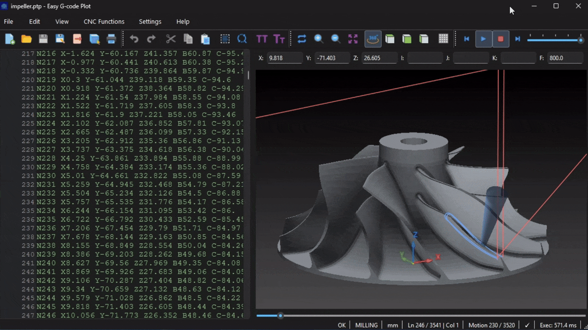
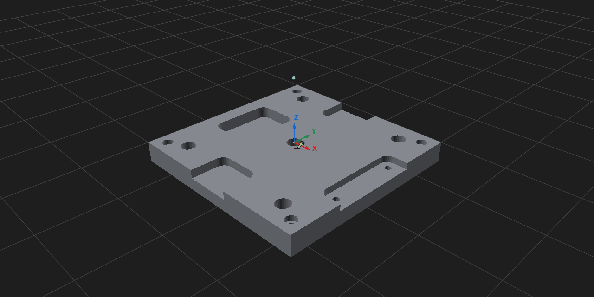
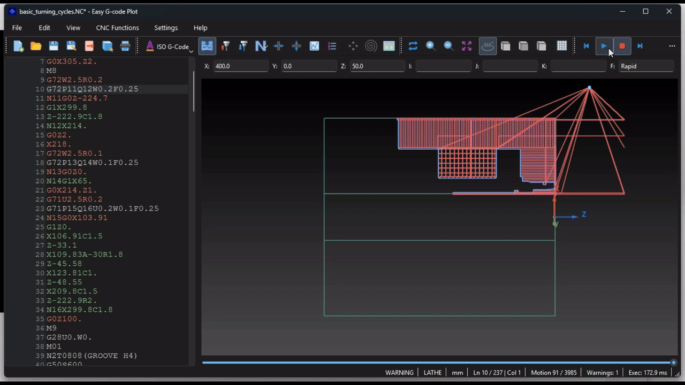
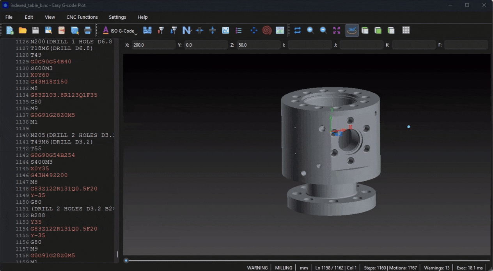

Toolpath playback and STL models
Step through tool motions and navigate to the corresponding source line. Load ASCII or binary STL models; position, rotate, copy and section them in the same scene.
Windows / Linux · GUI / CLI
Edit turning and milling programs, calculate toolpaths and inspect tool motion in a 3D scene. Supports FANUC turning/milling and SINUMERIK 840D milling, including supported native 3+2 and continuous five-axis CAM toolpaths. Analyze folders of programs, compare tool statistics and prepare exports with the same calculation kernel.
Checked CAM examples include programs from Autodesk Fusion 360 and Siemens NX 2312 using SINUMERIK 840D and FANUC postprocessors. Coverage follows the supported commands and configured kinematics; native commands with unmodeled warnings require review.
Linux builds are also available on the release page.

| Operation | Type A | Type B |
|---|---|---|
| Rapid | G00 | G00 |
| Linear | G01 | G01 |
| Arc CW | G02 | G02 |
| Arc CCW | G03 | G03 |
| Dwell | G04 | G04 |
| Thread cutting | G32 | G33 |
| Coordinate system / spindle clamp | G50 | G92 |
| Finish cycle | G70 | G70 |
| Rough turning | G71 | G71 |
| Rough facing | G72 | G72 |
| Pattern repeating | G73 | G73 |
| Face peck drilling | G74 | G74 |
| OD/ID grooving | G75 | G75 |
| Multiple threading | G76 | G76 |
| Turning canned cycle | G90 | G77 |
| Threading canned cycle | G92 | G78 |
| Facing canned cycle | G94 | G79 |
| Feed per minute | G98 | G94 |
| Feed per revolution | G99 | G95 |
| Type A | Type B | Purpose in the kernel |
|---|---|---|
| G70 | G70 | P-Q finishing contour |
| G71 | G71 | Longitudinal roughing |
| G72 | G72 | Facing roughing |
| G73 | G73 | Pattern-repeat roughing |
| G74 | G74 | Z peck / face grooving |
| G75 | G75 | X peck / radial grooving |
| G76 | G76 | Two-line multipass threading |
| G83 | G83 | Axial peck drilling |
| G84 | G84 | Axial tapping |
| G90 | G77 | Modal longitudinal turning cycle |
| G92 | G78 | Modal threading cycle |
| G94 | G79 | Modal facing cycle |
| Cycle | Description |
|---|---|
G70 |
The finish path is based on the nominal P-Q profile, not the roughing-offset profile used by G71/G72/G73. If tool-nose compensation is active and can be verified, the finishing contour uses the compensated profile. After the finish group, the cycle returns to the saved call position using the project's deterministic turning return order. |
G71 |
The common two-line FANUC form is modeled: The first line captures rough depth and retract. The second line supplies the P-Q profile, finishing allowances and feed. After the final contour pass, retract by R, return along Z, then return X to the cycle start. Curved contour sections remain analytical arcs through allowance calculation and Type I pass generation. A configured turning tool's nose radius and tip orientation are used in roughing; without a tool table, geometry is nominal. |
G72 |
G72 uses the same P-Q profile infrastructure as G71 but performs facing roughing in Z planes. Typical two-line form: The first line captures axial depth and retract. The second line references the profile and finishing allowances. |
G73 |
G73 is implemented as repeated shifted copies of the roughing profile. The first line captures the total U/W pattern displacement and the R pass count. The second line provides P/Q, finish allowances and feed. The signs of programmed U/W are preserved. The cycle does not infer displacement direction from where the tool happened to approach the contour. |
G74 |
G74 supports Z-direction peck behavior and face-grooving style repetition. A first block containing R alone can establish the retract distance. The executing block can use X/U and Z/W plus P/Q/R/F parameters. If no X target is supplied, G74 can operate as a drilling-style Z peck at the current X. When X repetition is requested, P controls the X step and Q controls Z peck depth. The cycle returns to its saved start using an explicit Z-first return order. |
G75 |
G75 performs X-direction peck/radial grooving. P controls the radial peck step. Q can repeat grooves along Z. If Q is omitted, a programmed Z/W selects one groove location rather than being treated as an invalid zero-step repetition. The R value from the setup block controls retract distance, and the executing-block R value is handled as the bottom allowance where applicable. |
G76 |
The modeled form is FANUC-style two-line G76: The first block stores:
The second block supplies:
|
G83 |
G83 is an axial Z drilling cycle.
|
G84 |
G84 is an axial tapping cycle. The downstroke and return are synchronized feed motions; the return is not represented as a rapid move. |
G90 |
Yes. G90 establishes a longitudinal rectangular turning cycle. Subsequent X/U-only blocks can continue the active cycle at new diameters until cancellation by another explicit motion/cycle code. |
G92 |
Example: The initial G92 establishes the thread end and lead. Subsequent X/U-only blocks continue the active G92 cycle with new depths until another explicit motion/cycle mode cancels it. Each pass expands to approach, synchronized longitudinal cutting, retract and return primitives. |
G94 |
Yes. G94 establishes a facing rectangular cycle. Subsequent Z/W-only blocks can continue the active cycle at new face positions until cancellation. |
G71 Type II supports pocketed profiles conservatively. G72 Type II rejects multiple disjoint spans in one facing plane (UNSUPPORTED_G72_TYPE_II_SPANS). G76 supports tool angles 0°, 29°, 30°, 55°, 60° and 80°; other angles produce UNSUPPORTED_G76_TOOL_ANGLE.
| G code | Function in the kernel |
|---|---|
| G00 | Rapid positioning |
| G01 | Linear interpolation |
| G02 / G03 | Clockwise / counterclockwise circular interpolation |
| G04 | Dwell signal; no spatial motion |
| G10 |
Program WCS offsets (L2, L20)
|
| G15 / G16 | Cancel / enable polar coordinate programming |
| G17 / G18 / G19 | Select XY / XZ / YZ plane |
| G20 / G21 | Inch / millimetre input units |
| G28 | Reference return using the configured home |
| G40 / G41 / G42 | Cancel / left / right cutter-radius compensation |
| G43 / G49 | Track / cancel tool-length state; G43 does not apply H geometry to the plotted path |
| G43.4 | TCP G0/G1/G2/G3 motion on the angled AC/BC table profiles, including Cartesian arcs with rotary interpolation; combination with G68.2 remains unsupported |
| G50 / G51 | Cancel / enable coordinate scaling |
| G52 | Local coordinate shift |
| G53 | Non-modal machine-coordinate motion |
| G54–G59 | Select work coordinate system |
| G54.1 P1–P99 | Parsed and selected; the GUI has no offset setting, so the offset is zero unless the program sets it with G10 L20 |
| G65 | Call a Macro B program; expressions support bitwise AND/OR/XOR and LN/EXP |
| G68 / G69 | Enable / cancel coordinate rotation |
| G68.2 / G53.1 |
Tilted working plane / tool-axis orientation (3+2,
fanuc_mill with two-axis table-table,
head-head or head-table kinematics)
|
| G73 | High-speed peck drilling cycle |
| G80 | Cancel canned cycle |
| G81 | Drilling cycle |
| G82 | Drilling cycle with dwell |
| G83 | Full-retract peck drilling cycle |
| G84 | Tapping cycle |
| G85 | Boring cycle with feed return |
| G86 | Boring cycle with spindle-stop signal |
| G90 / G91 | Absolute / incremental programming |
| G94 / G95 | Feed per minute / feed per revolution |
| G98 / G99 | Return to initial / R plane in canned cycles |
| M code | Function in the kernel |
|---|---|
| M00 / M01 | Stop / optional-stop signal |
| M02 / M30 | End program |
| M03 / M04 / M05 | Spindle clockwise / counterclockwise / stop signals |
| M06 | Tool-change event for the selected T number |
| M07 | Recognized; no machine-specific coolant action is modeled |
| M08 / M09 | Coolant on / off signals |
| M19 | Spindle-orientation signal; S on this block is an angle, not spindle RPM |
| M29 | Prepare rigid tapping; S on this block sets spindle RPM for the following G84 |
| M98 / M99 | Call / return from subprogram |
| Command | Description |
|---|---|
G73 / G83 |
G73 is high-speed peck drilling with short intermediate
retract behavior. G83 returns to R and rapidly re-enters
at clearance d above the previous depth, bounded by R,
before continuing at feed. The kernel option
|
G82 |
G82 includes its dwell semantics, but dwell itself does not create spatial geometry. |
G84 |
G84 tapping returns from depth as synchronized feed motion rather than rapid motion. |
G86 |
The cycle models spindle-stop semantics together with its drilling motion/return behavior. |
G98 / G99 |
For milling canned cycles, G98/G99 select cycle return behavior. They are not the turning feed-mode meanings of G98/G99. |
| ISO-M function | Support and limitations |
|---|---|
| G290 / G291 | Standalone blocks select native / ISO-M mode. MPF/SPF execution starts in native mode. |
| XYZ / G90 / G91 | Three-axis positioning, including incremental positioning. Rotary axes and TCP are unsupported. |
| G2 / G3 / IJK | ISO-M and native use incremental IJK centers. Native I=AC(...), J=AC(...), K=AC(...) explicitly select absolute centers; G90/G91 controls endpoints. |
| G54 P1–P48 | Extended work offsets. Source G54.1 and other decimal G codes are rejected. |
| G50 / G51 | Coordinate scaling; G51 uses P/1000 weighting. |
| G68 / G69 | Standalone 2D rotation with G90, center axes of the active plane and R. I/J/K, incremental-angle and 3D-vector forms are rejected. |
| Cycles and units | Common integer milling G codes, unit selection, coordinate systems and selected canned cycles are accepted within the ISO-M subset. |
| Macro B / ISO-T | Macro B program flow and ISO Dialect T are unsupported. Unsupported ISO functions produce diagnostics. |
| Native function | Current behavior |
|---|---|
G0/G1, G2/G3,
G17/G18/G19
|
XYZ positioning, linear moves and arcs in the selected
plane; CR= radius arcs, including negative
radius for a major arc
|
G90/G91, G54–G59,
G70/G71/G700/G710
|
Absolute/incremental coordinates and work offsets. G70/G71 select inch/metric lengths; G700/G710 also select feed units. |
G60 / G64 |
Exact-stop / continuous-path metadata; acceleration, stop time and blending are not simulated. |
G500 |
Modal deactivation of the settable work offset until the next G54–G59 call. Coordinates are rebased without motion. Default: zero G500 and base frame; API wcs_offsets[500] can supply a translation. OEM base-frame rotations, mirroring and scaling are not modeled. |
DIAMON / DIAMOF / DIAM90 |
Parsed with warnings; execution continues using DIAMOF semantics for all coordinates. Diameter programming is not simulated. |
CHF / CHR / RND / RNDM / FRC / FRCM |
Parsed with warnings without changing geometry or feed. Chamfers, corner rounding, modal rounding and corner feed are not simulated; RNDM=0 is recognized but has no geometric effect. Reports retain these warnings; resolved NC export is rejected. |
G40/G41/G42 |
Modeled cutter-radius compensation using the configured
tool with TCP off. G41/G42 under active TRAORI is not
modeled and stops execution with
UNSUPPORTED_TCP_CUTTER_COMPENSATION.
|
T, M6, D0..D12,
S, basic M codes
|
Tool change, modeled cutting-edge selection/cancellation, spindle and coolant signals; controller-specific offset tables are not simulated |
G0 SUPA ... D0 |
Nonmodal machine-coordinate positioning;
SUPA Z0 means machine zero, independently of
the configured home Z
Configured A/B/C axes are also supported, including rotary-only blocks. SUPA targets remain absolute under G91. |
G64, MSG(...),
WORKPIECE(...), ; comments
|
Path-control/display metadata and comments; no blending or stock geometry is generated from these declarations |
MCALL CYCLE81/82/83/84(...) |
Modal Z drilling/tapping in G17/G40,
triggered by subsequent XY blocks; bare
MCALL cancels the cycle
|
CYCLE81/82 |
Drilling and rapid return, with modeled seconds-based
dwell for CYCLE82; safety plane is
RFP + SDIS, return plane is RTP
|
CYCLE83 |
Modeled first depth, amount degression, minimum peck depth, chip-breaking/full-retract options and reentry clearance |
CYCLE84 |
Single-pass metric right-hand tapping in G94:
explicit positive PIT,
_PITA=0/1, SDAC=3, Z axis and
positive SST equal to programmed
S; equal SST1 or zero/omitted.
Feed = pitch × rpm; feed withdrawal to
RFP+SDIS, rapid return to RTP,
optional dwell in seconds
|
TRAORI / TRAFOOF |
GUI/CLI/kernel TCP via the common angled AC/BC table profiles; G0/G1/G2/G3 with configured numeric rotary axes |
CYCLE800 |
GUI/CLI/kernel static frames: modes 57/54/39/27/30/45, ST0/200000/200001/220000/220001, DIR-1/0/1; legacy 15-argument R_DATA setup and active-frame reset supported |
DEF REAL / assignments |
Underscore-named scalar variables default to zero; direct numeric, R and scalar assignments are supported. Arrays and compound expressions are rejected. |
I/J/K / AC(...) |
Plain IJK offsets are relative to arc start. AC explicitly selects absolute centers, including mixed center addresses. Source Arc Type and autodetection do not override SINUMERIK syntax. |
T="name" / M6 / T0 |
Case-sensitive named tool selection; M6 activates the selected tool and T0 with M6 unloads it. G41/G42 remains unverified without configured cutter geometry. |
D0..D12 under TRAORI |
Cutting-edge selection preserves the active TCP transform. |
FNORM / COMPOF / SETMS(1) |
Normal feed and compressor-off metadata; only main-spindle selection SETMS(1) is accepted. |
CYCLE832(...) |
Ignored without geometry or display events; zero to three direct arguments are accepted. |
CYCLE81(RTP,RFP,SDIS,DP) |
The four mandatory arguments are accepted; DPR is optional. |
GUI/CLI/kernel TRAORI/TRAFOOF supports TCP on the angled AC/BC table profiles, including rotary arcs. Numeric A/B/C and direct R references, incremental IC and shortest-path absolute DC require a matching profile. Exact DC half turns remain rejected. CYCLE800 uses Siemens matrices and the common TWP core; OEM retract paths are not simulated. G70/G71 select inch/metric lengths without changing feed units; G700/G710 also select feed units and retain the modal numeric F. G93 uses 1/F minutes per cutting motion, including rotary TCP motion; F must be positive. Reprogram F on G93/G94/G95 changes. G93 cycles and cutter compensation are unsupported. ORI*, TRANS/AROT, FGROUP, FL[], FGREF[], SPOS and CUT3D* are warning-only and unverified. Arbitrary Siemens subprogram calls are unsupported. R parameters support numeric assignments and direct references; arithmetic expressions and Siemens control flow are unsupported. CYCLE84 is limited to single-pass metric right-hand tapping; deep tapping, left-hand tapping and unequal entry/withdrawal speeds produce diagnostics.

Step through tool motions and navigate to the corresponding source line. Load ASCII or binary STL models; position, rotate, copy and section them in the same scene.

Material removal is calculated from tool geometry and the executed toolpath. Supports external, internal and face turning, grooves and thread profiles. Playback can move forward and backward.
OD/ID/Face checkboxes filter tracing choices in the tool editor; removal follows physical cutter geometry independently of those filters. Thread inserts use a fixed contour with three 60-degree teeth, scaled only by diameter. External P8 points down; internal P6 points up. The thread-removal profile is calculated separately.

A/B/C table profiles, indexed 3+2 machining with G68.2/G53.1 and a supported subset of G43.4 TCP motion. The selected kinematics profile determines the displayed toolpath.
Syntax highlighting, search and replace, block numbering, block skip, snippets, tool-change navigation and macro variable inspection.
Turning and milling tool geometry, a saved SQLite library and a separate tool set for the current program.
Circular and rectangular hole patterns and pockets with a preview.
The dialog is split into two columns. The left column holds the export type, the target controller, arc output and the expanded output representation (modal feed, decimal places, force decimal and plus sign). The right column holds the program-text wrappers (start/end text and safety line) and the coordinates/formatting block (coordinates, sequence numbers, delimiter and leading zero). Groups are separated visually without titles so the dialog mirrors the export contract directly.
EXPANDED EXECUTION is one universal serializer of the resolved execution. Target CNC selects the target syntax and post profile, while every user output option stays available and is honored for FANUC → FANUC, FANUC → SINUMERIK ISO, FANUC → SINUMERIK native and SINUMERIK → FANUC. Profile defaults apply only to options the user does not set, and the mandatory controller frame (G290/G291) always stays first.
Auto (source controller) is not a separate mode: it automatically selects the post profile matching the source controller and dialect. Modal Feed controls whether F is restated when feed and mode are unchanged. Safety Line inserts the profile's declared safe restart block after the user start text.
The desktop dialog, the single-file export command and
batch-export all use the same export contract and conversion code, so CLI and
batch output matches the GUI for the same settings.
The frontend builds Program/AST once. Tool setup uses that same model to classify operations, look up saved tools by T number and retain manual program overrides. The Cython/Python source scanner supplies literal tool candidates, comments and dimensions. The kernel then evaluates flow, variables, cycles, coordinate systems and tool compensation. The resulting moves are used by the 3D view, playback, statistics and export. The desktop interface and CLI use the same calculation kernel.
Native SINUMERIK CYCLE81–83 select drill defaults and CYCLE84 selects a tap through controller AST facts, including modal MCALL and its cancellation. Matching saved-library tools supply their actual geometry before defaults are used. A found or default tool does not guarantee verified compensation: G41/G42 can still produce UNVERIFIED diagnostics.
When an unsupported command affects the tool position, the kernel reports a diagnostic and marks the result as incomplete. The application models toolpath geometry; it does not simulate all physical processes of a CNC machine.
See how much of a program was executed, where each tool travels and how cutting and rapid moves contribute to length and estimated time. The desktop Statistics dialog and CLI reports use the same calculations.
Grouped tables show motion counts, cutting and rapid lengths, estimated times, average feed and XYZ bounds. Execution status distinguishes complete results, warnings and partial or invalid execution.
Use the tool selector to switch between the whole program and an individual tool. Each tool has its own lengths, times and XYZ bounds. Display measurements in millimetres or inches.
Export HTML from the Statistics dialog or CLI. The standalone report includes all tool sections and a static SVG toolpath projection: XY for milling, XZ for turning. It opens in a browser without installing the application.
Generate a readable HTML report and detailed JSON in one run. For FANUC milling files, specify
--lang fanuc_mill; use fanuc_turn for turning.
.\easy_gcode_plot_cli.exe analyze ".\programs\part.nc" --lang fanuc_mill `
--html ".\reports\part.html" -o ".\reports\part.json"In the GUI, open Statistics, choose a tool or units, then select Export HTML. Exported reports always use a light theme; the dialog follows the application theme.
The example was generated from plate_setup_complete.nc: 377 movements and 10 tools.
Time is a kinematic estimate; dwell, tool changes and acceleration are not included.
Process a folder in one command instead of opening each program manually. Review diagnostics in a spreadsheet, produce reports for colleagues or export a complete directory tree.
FULL normalizes source blocks using the execution map and unfolds Macro B, IF/GOTO, subprograms and turning G70–G76 cycles. EXPANDED is one universal serializer of the resolved execution through a configurable JSON controller profile. Every user output option stays available across targets; the profile only supplies syntax and defaults.
Export resolved toolpath geometry to DXF.
Use parse, trace, analyze and export for individual programs. Use batch for directory analysis and batch-export for directory export. Both batch commands reuse the single-file APIs.
Choose EXPANDED EXECUTION and the target controller. Kernel geometry and states
are emitted through JSON profiles fanuc_mill, fanuc_mill_multiaxis, fanuc_lathe_a, fanuc_lathe_b, sinumerik_iso, sinumerik_840d and sinumerik_840d_multiaxis.
Auto (source controller) picks the profile matching the source; select an external
profile with --post-profile path/to/post.json.
Target profiles define syntax, mandatory frames, capabilities and defaults. User formatting options — G90/G91 coordinates, sequence numbers, delimiter, leading zero, modal feed, decimal precision, force decimal, plus sign, arc output and start/end program text — are honored across FANUC and SINUMERIK targets; a profile default is used only when the user does not choose. Cycles and variables are resolved by the kernel; supported drilling and tapping operations use the selected post's cycle templates. Physical coordinates use a zero-offset G54 frame. Three-axis posts reject rotary/TCP geometry; multiaxis posts reconstruct configured indexed A/B/C, verified simultaneous table-C motion and supported angled AC/BC TCP. Tilted-plane/CYCLE800 reconstruction, indexed export about a displaced WCS origin and unverified geometry-changing commands remain unsupported.
Options → General → 840D Extended cycles selects the native cycle interface:
checked uses Siemens 03/2009, unchecked uses classic 01/2008. CLI retains
--sinumerik-cycles classic|sl; this selection does not enable unsupported cycle operations.
The profile's format.words controls frame-word order and mandatory output. Each token
(motion, X, Y, Z, A, B,
C, I, J, K, R) has an order
and a required flag with optional decimals/sign. required
forces an address to be emitted when it has a resolved value; motion.required=false makes the
motion code modal. An axis entry is only valid when the axis is declared in supports.axes, and
F is excluded because feed is controlled by Modal Feed.
FULL preserves the source dialect and ordinary blocks, unfolding only flow-dependent Macro B / IF/GOTO / subprogram constructs and turning G70–G76 when required for safe normalization. DXF writes motion geometry independently of NC post formatting.
.\easy_gcode_plot_cli.exe export fanuc_part.nc --lang fanuc_mill --mode expanded --post-profile app\gcode\export\posts\sinumerik_iso.json -o iso_part.mpf
.\easy_gcode_plot_cli.exe export native_part.mpf --lang fanuc_mill --mode expanded --post-profile app\gcode\export\posts\fanuc_mill.json -o fanuc_part.ncCompare generated NC directly with a UTF-8 reference using --compare-with expected.mpf.
Exit codes: 0 for a match, 1 for a mismatch with unified diff on stdout, 2 for an error.
LF/CRLF differences are ignored; spaces, comments and the final newline are compared. The reference is protected from overwrite.
.\easy_gcode_plot_cli.exe export source.nc --lang fanuc_mill --post-profile sinumerik_840d -o actual.mpf --compare-with expected.mpfScan programs and subdirectories, collect execution errors and warnings, and generate an HTML statistics report for each file. CSV helps identify programs that need attention; JSON retains the detailed diagnostics.
.\easy_gcode_plot_cli.exe batch ".\programs\milling" --lang fanuc_mill `
--html ".\reports\html" -o ".\reports"reports/batch_report.csv — per-file status, counts and diagnostics, ready for a spreadsheet.reports/batch_report.json — summary and detailed results for further processing.reports/html/…/part.nc.html — one report per program; subdirectories and input suffixes are retained.Without --lang, analysis selects milling for MPF/SPF and turning for other extensions.
For a folder of FANUC milling programs, explicitly use --lang fanuc_mill.
Apply one export configuration to every program: expanded NC, FULL source normalization or DXF. Results go to a separate directory with the same relative subdirectories.
.\easy_gcode_plot_cli.exe batch-export ".\programs\milling" --lang fanuc_mill `
--mode expanded -o ".\exported"For DXF toolpaths, add --format dxf. Use --mode full for source-preserving
normalization, or --mode expanded --post-profile ... for controller postprocessing.
batch_export_report.csv and batch_export_report.json record output paths,
status, diagnostics and effective export settings.The output directory must be outside the input tree. Choose the machine type and supported target for the folder; unsupported conversion is recorded as an error rather than silently changing the program. The four shipped conversion scripts are covered by a semantic regression gate that re-executes successfully exported programs and compares their trajectory signature with the source.
Supported commands, settings, limitations and usage examples.